车联网安全基础知识之UDS刷写
车联网安全基础知识之UDS刷写
有段时间没写文章了，之前计划要写的车联网安全基础知识系列要写的已经新建了好多好多文件了。年初到最近都忙于项目和一些生活上的事情，所以没有更新文章。最近有不少伙伴来催更，也欢迎其他小伙伴来催更和提需求。最近在给公司做SOA架构下的安全测试中，发现27算法在一些新场景下的用途以及存在的安全问题。回头翻资料的时候发现讲27服务(安全访问)的文章倒是不少，而讲述完整的UDS刷写过程的文章相当少，且很少与安全相结合。今天和大家分享一下27安全访问的安全性以及我对UDS刷写流程的一些认识。
前置基础知识
本文不会详细讲解UDS的基础知识，后续会出专题讲解 UDSonCAN、UDSonIP ，到时会站在安全研究的角度详细UDS协议。本文重点讲述UDS刷写流程，在了解刷写流程后可编写脚本验证MCU固件刷写的安全性，提高安全检测的效率。
服务ID汇总
首先总体看一下刷写涉及的服务ID以及在刷写过程的用途。
| 诊断服务标识 Service ID | 诊断服务 Diagnostic Service | 在刷写过程中的用途 | 备注 |
|---|---|---|---|
| 0x10 | 诊断会话控制 DiagnosticSessionControl | 切换到拓展会话检查刷写条件、停止一些功能 切换到编程会话执行刷写 |
|
| 0x11 | ECU复位 ECUReset | 用于刷写完成后重启服务，使新固件生效 | |
| 0x27 | 安全访问 SecurityAccess | 校验刷写者身份，采用seed-key | |
| 0x28 | 通信控制 CommunicationControl | 关闭和启用一般通讯报文 | |
| 0x29 | 认证服务 Authentication Service | 基于PKI的身份认证 | 27服务的增强版 |
| 0x31 | 例程控制 RoutineControl | 指定特定的例程，前置条件检查、检查编程依赖等 | |
| 0x34 | 请求下载 RequestDownload | 设置下载的参数(起始地址、长度) | |
| 0x36 | 数据传输 TransferData | 固件传输 | |
| 0x37 | 请求结束传输 RequestTransferExit | 终止数据传输 | |
| 0x3E | 测试设备在线 TesterPresent | 用于将会话保持在当前会话中 | |
| 0x85 | 控制故障码设置 ControlDTCSetting | 设置启停故障码存储功能 |
会话
诊断会话关联了一系列的诊断服务或诊断功能。只有当前激活的诊断会话支持的诊断服务才能被响应。ECU通常有两个以上的诊断会话，包括：一个默认会话(Default Session)和若干非默认会话(Non Default Session)。其中非默认会话又包括编程会话和扩展会话等。其他非默认会话由厂商自行定义。常见的ECU诊断会话定义如下：
| 诊断会话 | 会话ID | 描述 |
|---|---|---|
| 默认会话 | 0x01 | ECU启动后默认进入此会话。只提供基本的诊断服务。 |
| 编程会话 | 0x02 | ECU更新应用程序或标定数据时进入此会话。支持与程序更新相关的诊断服务。如0x34、0x36、0x37等。 |
| 扩展会话 | 0x03 | 除支持默认会话下的诊断服务和功能外，还支持额外的诊断服务。 |
| … | … | … |
诊断会话控制服务(0x10)是用于激活控制器各种不同的会话模式 。在固件刷写中会使用0x10服务在默认会话、编程会话、拓展会话来回切换。
会话保持(3E 00)
此服务用于向单（或多）个服务端指示客户端仍然与车辆连接，并且维持先前已激活的某些诊断服务和/或通信将保持活动状态。此服务用于将一个或多个服务端保留在默认会话之外的诊断会话中，通过周期性的发送 3E 实现 。
整个刷写过程中， 刷写工具要周期性的发送链路保持请求， ECU 不需要响应请求信息。如果没有开启会话保持，几秒后ECU就会切回默认会话。
- 刷写前需要保持在拓展会话下。
- 刷写中需要保持在编程模式下。
27 服务-安全访问认证流程
安全访问服务的目的是为保密和排放、安全相关的一些服务和数据提供访问权限来保护数据。2E(通过DID写入数据)、2F(通过DID进行输入输出控制)、31服务(例程控制)、34服务(请求下载)、36服务(请求上传)、37服务(数据传输)等服务需要经过身份认证。身份认证利用了种子和密钥之间
的关系。 服务的示例如下图所示：
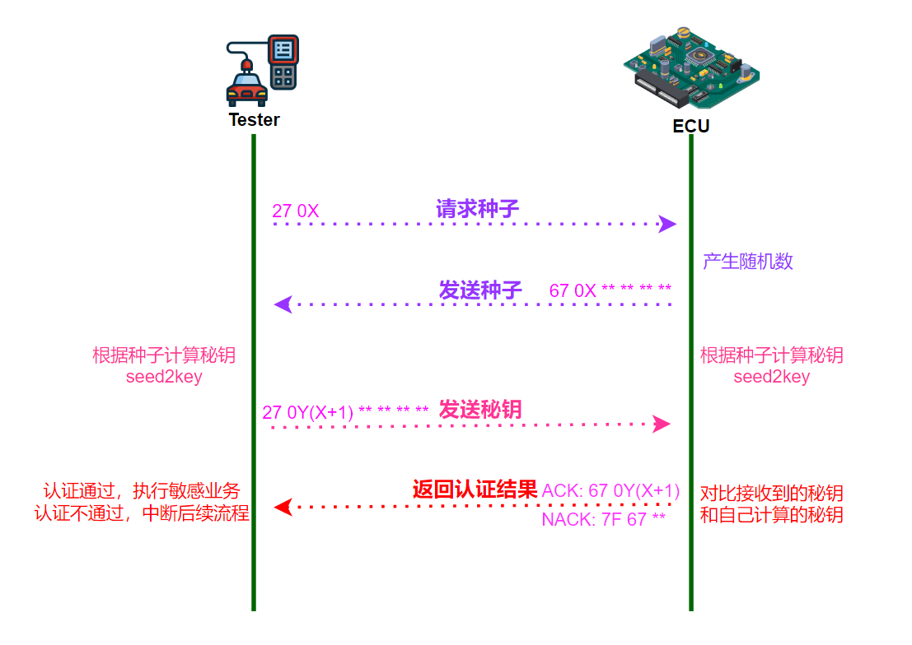
- Request Seed：Tester 使用27服务，并携带需要解锁的安全等级 0X 发送给特定的 ECU。
- Request Seed Reply : 对应的ECU收到之后，生成4个字节的随机数 Seed，返回给 Teseter。
- Send Key: Tester 拿到Seed后，使用自定义实现的 Seed2Key 算法计算出Key，发送给ECU。Send Key 中的安全访问级别 0Y 为Request Seed的安全访问级别的值 +1。例如当请求种子为 27 01 时，发送秘钥则为 27 02(01+1)。
- Send Key Reply : ECU 将收到的 Key 和 自己拿 Seed 作为输入的 Seed2Key 计算出结果进行对比，然后返回验证的结果。
Seed2Key 算法
安全访问中最重要的就是Seed2Key算法，算法通常是一些比较简单的移位算法，例如下列的算法。
1 |
|
seed2key 接受2个输入参数 种子 和 安全常量，种子由 ECU 随机产生；安全常量内置在ECU和诊断仪中，在某种意义上来说安全常量就是密码。采用同一算法的不同用途的 ECU，通常使用不相同的安全常量。
诊断连接方式
诊断设备与ECU连接有两种方式，如下图。
- 诊断设备连接网关，由网关将消息转发给ECU；
- 诊断设备与ECU直连。
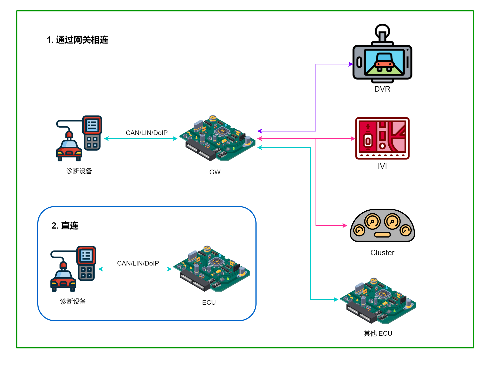
固件格式
S-record、Intel Hex、BIN、VBF 是汽车中MCU固件常用的格式，下面简单介绍一下这几种格式。了解数据格式有助于固件分析、刷写安全测试等。
S-record
S-record 是摩托罗拉设计的一种常于MCU内存、EPROM、EEPROM 写入的文档格式，S-record 将二进制数据以ASCII字符表示。常用文件后缀名有 SRECORD、SREC、S19、mot。文件格式如下图。
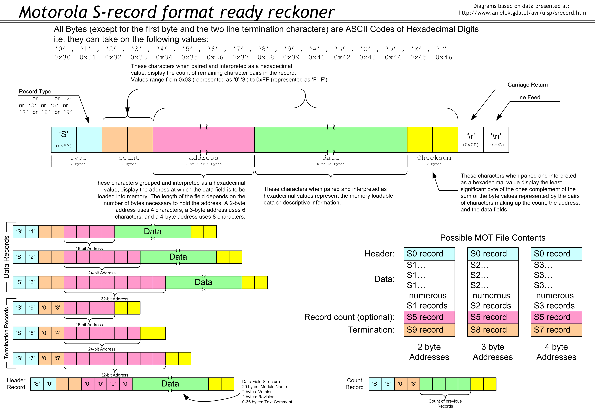
- Header Record 文件头信息，其中记录有模块名称、版本号等；
- Data Record 数据记录，有 S1、S2、S3 三种类型；
- Count Record(可选) 包含了先前传输的S1、S2、S3记录的计数;
- Termination Record，结束记录，有 S7、S8、S9 三种类型。
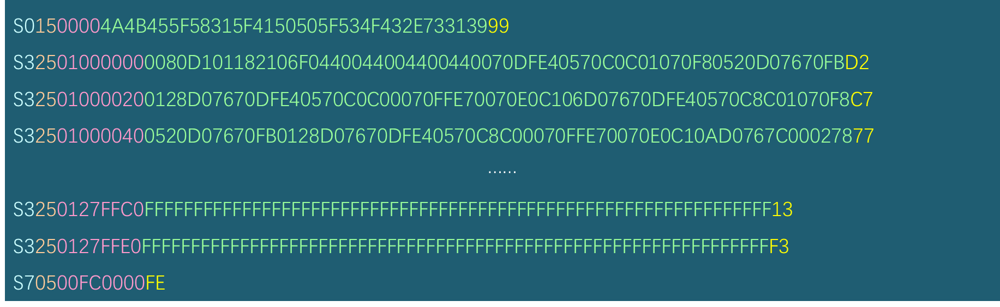
S0 Record(头记录)：记录类型是“S0”。地址场没有被用，用零(0x0000)填充。数据场中的信息使用HEX转换成字符串是：JKE_X1_APP_SOC.s19。此行表示程序的开始，不需烧入内存，用来表述文件的相关信息，可能包含文件名、版本号等。
S3 Record(数据记录)：记录类型是“S3” 。地址场由4个字节地址，数据场由可载入的数据组成。
S7 Record(结束记录)：记录类型是“S7”。地址场由4字节的地址，包含了开始执行地址。没有数据场。此行表示程序的结束，不需烧入内存。
注： S-Record 中记录有固件的起始地址，逆向分析时直接从中获取，然后设置为起始地址即可。
Intel HEX
在嵌入式MCU程序开发中，经常编译链接后生成的 HEX 就是采用的 Intel Hex 格式。也是一种将二进制文件转换成了ASCII码形式存储的文本文件。
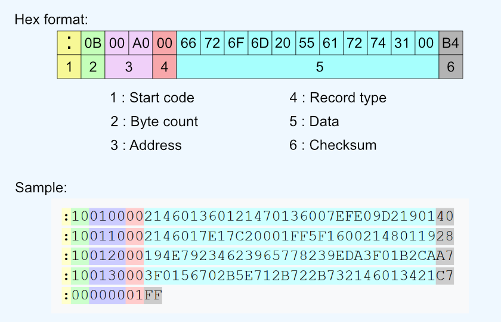
BIN
二进制文件，只有固件数据，没有起始地址、描述信息等。
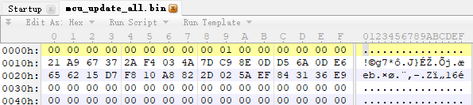
自定义格式
车企自定义格式如，VBF(Volvo Binary File)。VBF 使用在 volvo、mazda、Ford、吉利等品牌的汽车中。
文件头记录有文件的VBF版本号、软件版本信息、ECU物理地址、数据起始地址等。
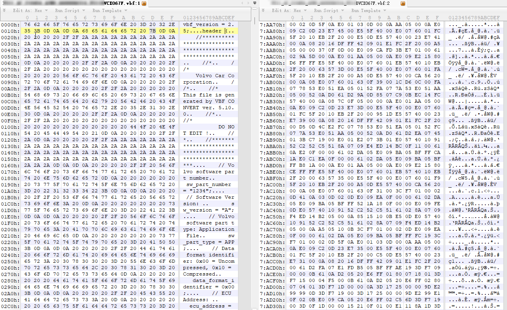
分析工具
srecord
命令行工具 srecord
1 | sudo apt-get install srecord |
查看S-record文件信息
1 | fans@fans:~$ srec_info JKE_X1_APP_SOC.s19 |
文件转换
S-record 转 hex
1
srec_cat JKE_X1_APP_SOC.s19 -Motorola -o JKE_X1_APP_SOC.hex -Intel
Intel hex 转 S-record
1
srec_cat JKE_X1_APP_SOC.hex -Intel -o JKE_X1_APP_SOC.s19 -Motorola
S-record 转 bin
1
srec_cat JKE_X1_APP_SOC.s19 -Motorola -o JKE_X1_APP_SOC.bin -bin
HexView
S-record、Intel Hex、BIN 文件之间的转换可以采用 Vector 的图形化文件编辑软件 HexView。
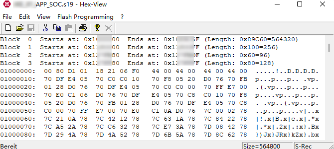
专用工具
主机厂或供应商自己开发的专用软件，如VBF文件查看工具 VBF Tool.
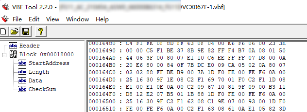
脚本
根据文件格式定义，编写脚本解析、提供固件，部分可以在 Github 上找。
1 | # wget https://raw.githubusercontent.com/consp/vbfdecode/master/vbfdecode.py |
UDS 刷写
使用 CANoe 等工具刷写时，开发环境后台帮助我们完成了很多工作，平常大家很少注意这背后到底发生了什么。下面就来看看整个刷写流程。
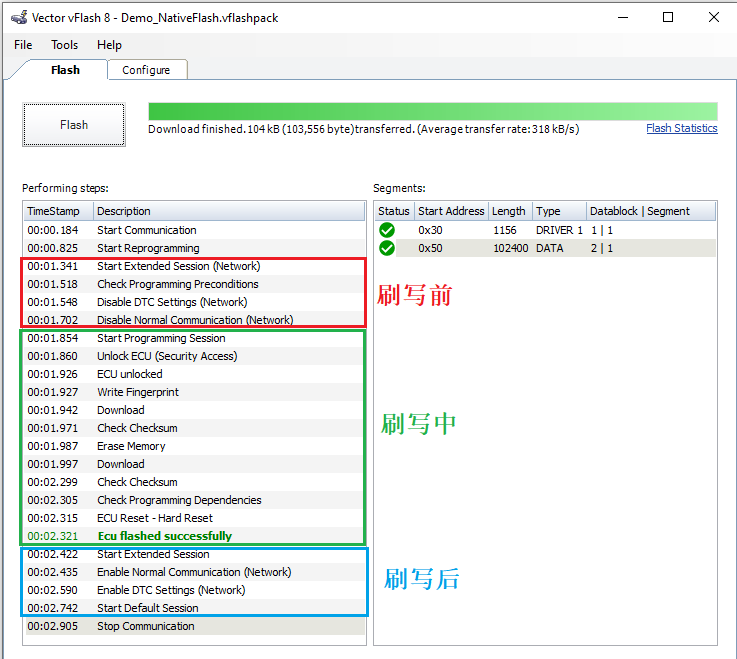
刷写过程定义了刷写前、刷写中、刷写后三个阶段， 负责将正确的刷写文件( S19 或者 HEX) 下载到 ECU 中。
1 刷写前(设置刷写网络 )
刷写前，刷写工具读取 ECU 的 Boot 软件版本号(F180)、软件版本(F188)、 VIN(F190)、 硬件版本(F191)，根据从 ECU 获取到的相关信息到刷写数据库中查找对应的升级文件。维修店代码或诊断设备序列号(F198)、刷写日期(F199)在刷写启动时写入，用于追溯之前的刷写操作。
刷写准备阶段需要确认待刷写控制器的相关版本信息， 设置刷写网络等。 这个阶段在整车各个控制器的应用程序中执行， 此阶段， 使用功能地址向网络上的各控制器发出诊断请求进行网络设置。
1.1 切换到扩展模式(10 03)
默认状态下 ECU 在 01 默认会话中,使用UDS 会话切换(10 03)进入拓展会话。
1.2 检查刷写前提条件(31 01 XX XX)
整车厂通常会定义一些控制器刷写的前提条件，比如车速要低于3km/h等,这一步就可以检查刷写前提条件是否满足。不同的OEM/Tier1可能有不同的检查条件。常见的前置条件如下，
- ECU 的电源电压不能太高或者太低(9V-16V)
- 车辆处于 IGN On 状态， 但不在 Ready 状态
- 车辆处于静止状态，车速为 0km/h
具体实现上，使用 31服务 执行检查编程条件的例程 routine，如条件不满足(比如车速过高等)，则退出刷写。
1.3 停用故障码存储功能(85 02)
刷写过程中，控制器功能不正常，可能不能收发总线消息，这种情况下，需要避免在这个过程中触发故障码存储。使用85诊断故障码设置服务设置故障码设置类型为OFF(02)关闭DTC的存储。
1.4 停止发送一般通讯报文(28 01 01 XX XX)
刷写过程中，因为传输的数据较多，因此停用通讯报文的发送可以降低总线负载。
使用28服务关闭与诊断无关的报文，将节约出来的通信资源用于刷写软件，提升刷写速度。
2 刷写中(认证&下载数据)
刷写中首先进行身份认证，而后可以写入指纹，然后执行刷写擦除内存，向指定地址下载固件，并检查写入是否正确。
2.1 切换到编程会话(10 02)
刷写过程必须要在编程会话中才可以进行。使用会话控制服务 10 02 切换到 programming session。
2.2安全访问-请求种子(27 01)
27 安全访问服务 保证是有权限的人员或者设备才能够进行刷写，安全访问服务子功能请求种子向 ECU 请求安全认证种子。
2.3 安全访问-发送与验证Key(27 02)
诊断设备收到种子后，将种子作为输入，使用双方已知的算法，计算得到Key。然后使用子功能发送秘钥将计算得到的秘钥发送给ECU。ECU使用相同的算法计算出秘钥并与收到的值进行对比，相同则认证通过。
如果连续多次认证失败，安全访问会暂停服务一段时间。每认证失败一次，ECU安全访问失败计数器就会加1。当错误次数达到3次后，将收到0x36(尝试次数超限)的否定响应码，并延时10秒。10秒之内请求会收到0x37(延时时间未到)的否定响应码，10s之后才能再次发起认证请求。
2.4 写入指纹(2E XX XX YY YY …)
记录刷写时间(F198)、写入指纹信息(F199)，标记写软件人的身份(维修店编号、诊断设备序列号)。
2.5 擦除内存(31 01 FF 00 XX XX YY YY)
在向 ECU 的内存区域下载数据之前， 需要先擦除内存区域已有数据。
采用 31 例程控制服务 FF00 擦除内存，根据控制器地址空间分配和芯片擦除能力，单次擦除所有或多次分段擦除。
31 01 FF 00 擦除起始地址 擦除长度
2.6 请求下载(34 XX YY ZZ ZZ AA AA)
向ECU传输软件之前需要指定写入的地址和数据的大小。
刷写设备使用 34 请求下载服务向 ECU 指定刷写起始地址和刷写数据的大小， 请求下载 ($34)服务指定的内存从起始到结束应该是连续的。如果不是连续的，刷写设备应该为每个要刷写的数据块发送一个单独的请求。
34 数据格式标识符 地址和长度格式标识 内存地址 内存大小
2.7 传输数据(36 XX YY YY …)
软件下载服务，将数据下载到上一步指定的内存中。
刷写设备使用 36 传输数据服务向 ECU 内存区域中传输刷写的数据，一个数据块通常需要多条传输数据服务传输。
36 数据块顺序计数器 数据
2.8 请求传输退出 (37)
37 服务退出当前连续内存区域的刷写，将在肯定响应中携带校验和，校验最近的一条请求下载请求服务指定的内存区域。
返回的校验和与刷写设备计算的校验和进行比较，如果不相同，将重新使用 36 数据传输服务下载数据，多次校验不通过，刷写将会中断。
2.9 检查存储空间(31 01 02 02)
检验刷写的数据的可靠性，在软件/数据刷写完毕时，刷写设备通过例行程序服务来验证刷写到内存区域的每块数据是否成功。
检查刷写的数据的完整性，确定来源合法，通过CRC、哈希、数字签名等方法，保证刷写过程中不会出错，且刷写的数据是来自合法的提供者。
2.10 检查编程依赖(31 01 FF 01)
使用 31 例程控制服务 FF01 确认刷入的软件和ECU的硬件，基础软件是匹配的。
2.11 ECU复位(11 01)
整个刷写完成后，刷写设备要求 ECU 硬件复位， ECU 进入应用程序。
11 复位服务重启ECU，使刷写的新软件生效。
3 刷写后(还原网络)
刷写后的步骤与刷写前的步骤是对应的，启用刷写前禁用的通信等。
此时网络恢复到正常的模式， ECU 以默认的波特率进行正常的通信，并能进行故障码的检测和存储。 刷写结束后要求各 ECU 恢复非诊断消息的发送及接收 。
3.1 切换到扩展模式(10 03)
默认状态下 ECU 在 01 默认会话中,使用UDS 会话切换(10 03)进入拓展会话。在拓展会话中，启用非诊断通信、清除刷写阶段产生的故障码、各 ECU 恢复故障码的检测。
3.2 启用发送一般通讯报文(28 00 01 XX XX)
使用 28 通信控制服务启用在刷写前停止收发的一般通讯报文。
3.3 各 ECU 恢复故障码的检测(85 01)
恢复故障码检测，使用85诊断故障码设置服务设置故障码设置类型为ON(01)恢复DTC的存储。
3.4 ECU 回到默认模式(10 01)
从拓展会话切换回默认会话。
刷写流程图
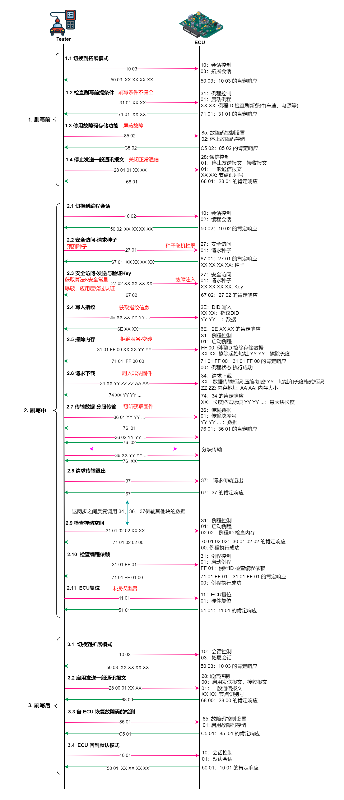
安全威胁
刷写中最主要的安全维修就是安全访问被突破，而后就能获取ECU中的软件/数据以及刷入篡改的固件。
安全访问算法
安全访问算法一般采用对称加密算法，通常还是简单的移位算法，算法强度较低。
故障注入：算法大部分主机厂自己设计实现的，算法本身的安全性很少验证。使用故障注入等方式存在被绕过认证的可能。
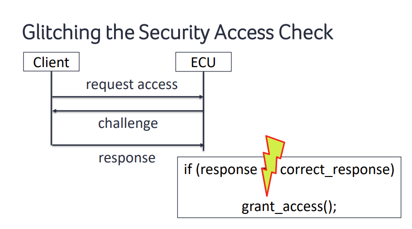
泄露： 主机厂/供应商代码、企标等在互联网上泄露。
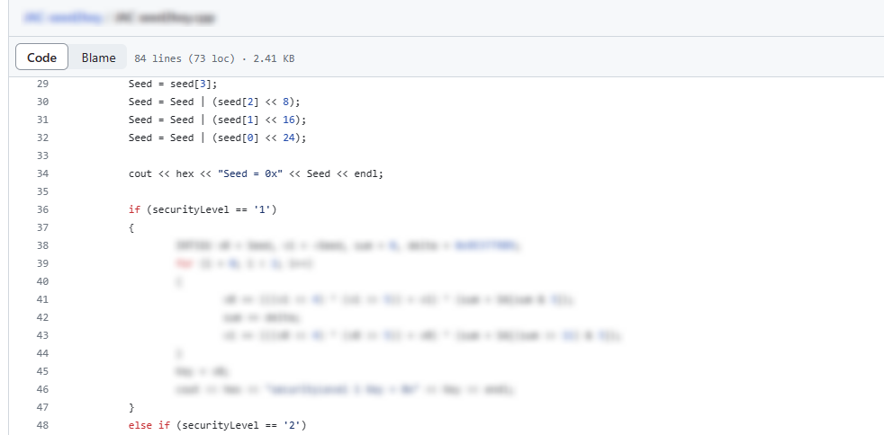
易被逆向：seed2key 一般以 so 文件存在，对固件、诊断仪中的库文件逆向得到安全访问算法。
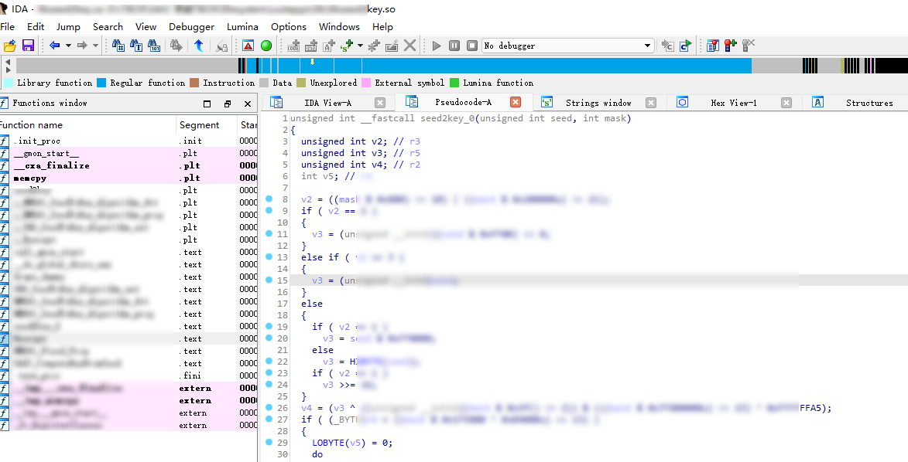
Key
- 配置问题：Key的有效长度过短，CVE-2017-14937 安全气囊安全访问（SA）Key为2个字节，第一个字节恒为0x01，那么气囊点火算法只有256个可能的密钥对。
安全常量
除了算法本身以外，最重要的就是安全常量。安全常量通常为4个字节。
安全常量硬编码：安全常量硬编码在so库中，逆向安全访问算法得到安全常量。
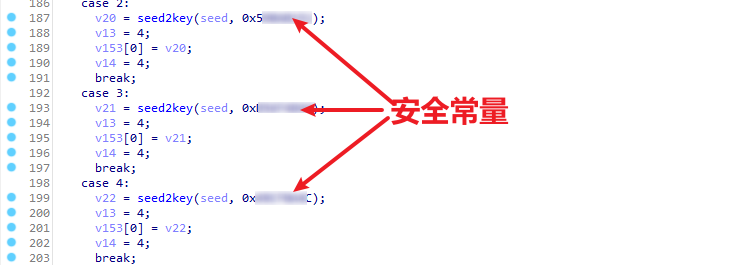
默认: 使用默认的安全常量，在渗透测试中曾多次遇到，
0xc541a9是最常见的安全常量。使用相同常量：使用同一种算法的ECU依赖于不同的安全常量来保障安全性。不会因为一个模块算法和常量被分析出来之后，直接影响到另外一个模块上。此外，同一车型同一类型ECU的常量通常相同，很少有实现一机一密的。
种子
种子可被预测：某车型中的种子基于时间产生，获取到Mask后，能够预测到后续的种子。预测到种子能够缩减破解的时间。
1
2
3
4
5
6
7
8
9
10static uint32 UDS_GenerateSeed(void)
{
uint32 u32LocalSeedValue;
u32LocalSeedValue = STM0_TIM0.U;
u32LocalSeedValue ^= UDS_ku32LocLevel01;
u32LocalSeedValue = ( u32LocalSeedValue << 7 ) | ( u32LocalSeedValue >> 24 );
return u32LocalSeedValue;
}种子随机性：种子随机性较弱，多次请求出现相同种子的情况。
固定种子：每次获取到的种子相同，这使得爆破出Key成为了可能。
种子恢复：ECU复位后种子相同，每认证一次后复位一次，能够有效降低爆破的数量级。
安全防护 Bypass
- 直接从应用层绕过，对一些实现了远程诊断的车型，直接调用应用层，操作敏感功能，而无需要关注安全访问。
- ECU Reset 重置绕过安全访问延时。
- 安全访问延时绕过，2010 年的 VW Golf 转向ECU 在 K线上实现的UDS，使用低权限的用户登录后认证失败计算器就是清零。在爆破高权限时，在中间穿插一些低权限用户登录就能持续爆破。
拒绝服务
- 持续发送错误的消息，将触发10s延时认证，影响正常的刷写。
- 31 服务擦除内存，使 ECU 变砖。
- 刷写前提条件不健全，如车辆在运行中执行刷写流程，影响行车安全；正常行驶中，停止通信报文发送，出现异常。
窃听获取固件
由于CAN广播传输的特性，任何节点都能接收到发送的消息。当下载固件时，如果固件没有加密传输(在请求下载中指定为不加密) ，持续监听总线，当执行ECU升级时，能够监听获取到固件。
非法刷写
- 34、36 缺乏身份认证，在未经身份认证的情况下刷写。
- 安全认证被突破，刷入非法固件。
软件付费绕过
经过认证后，通过篡改固件或发送伪造消息启用需要额外付费的功能。
防御
使用非对称算法: 使用29服务替代27服务，29服务支持非对称算法，安全性能够得到很大的提升。即使算法泄露，也不会造成影响。
安全常量采用安全存储： 自行实现的对称加密算法安全常量通常硬编码在so库中，容易被逆向出。安全常量应采用安全存储。
算法逻辑安全： ECU复位后，产生的种子每次都一样，应避免采用类似缺陷的算法；敏感功能都受到安全访问保护。
安全配置： Key 的有效长度能够有效防御暴力破解等；刷写前置条件健全，在特定条件下方能执行刷写流程。
安全启动：应用安全启动，当安全访问被突破后，拒绝启动刷入经过篡改的固件。
安全传输： 固件采用加密传输，请求下载数据传输标识指明为加密传输，并对应使用加密固件。
监测： 检测潜在的攻击，及时阻断。
还原：检测到被篡改，通过备份、云端等信息恢复。
附录
参考
ISO14229 Unified diagnostic services (UDS) — Part 1
XXXX ECU刷新规范
us-18-Milburn-There-Will-Be-Glitches-Extracting-And-Analyzing-Automotive-Firmware-Efficiently